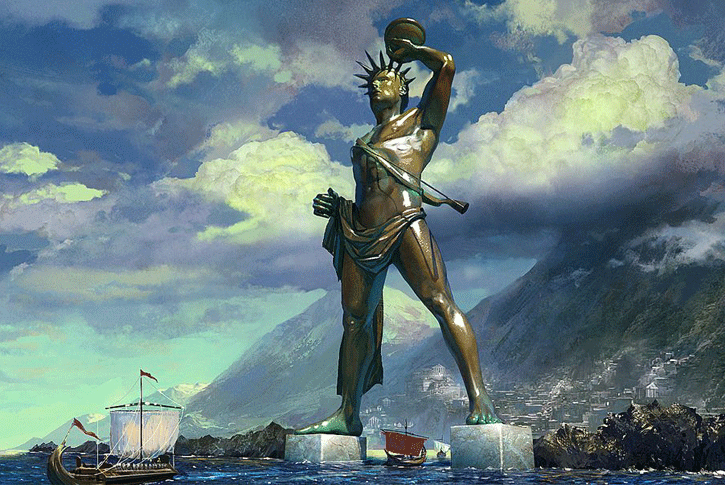
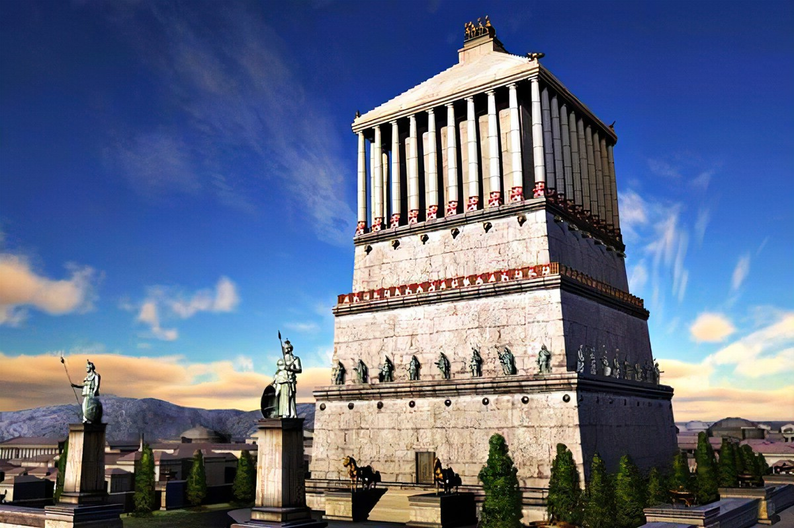
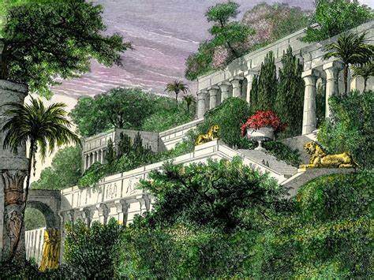

Kolos Rodyjski
Gigantyczny posąg boga Heliosa, wzniesiony przy wejściu do portu na Rodos, symbol triumfu.
Więcej informacjiLatarnia morska na Faros
Pierwsza monumentalna latarnia w Aleksandrii, wskazywała żeglarzom drogę, imponując rozmiarem i technologią.
Więcej informacji
Mauzoleum w Halikarnasie
Imponujący grobowiec Mauzolosa, ozdobiony rzeźbami, stanowiący przykład wybitnej sztuki i architektury.
Więcej informacji
Piramida Cheopsa
Najstarszy i jedyny zachowany cud, monumentalny grobowiec w Gizie, symbol inżynierii starożytnego Egiptu.
Więcej informacjiPosąg Zeusa w Olimpii
Złoty i kościany pomnik greckiego boga Zeusa, dzieło Fidiasza, symbol chwały olimpijskiej.
Więcej informacji
Wiszące ogrody Semiramidy
Mityczne tarasy ogrodowe w Babilonie, zbudowane na polecenie króla Nabuchodonozora II, prawdopodobnie nigdy nie istniały.
Więcej informacjifoto/Świątynia Artemidy w Efezie.
Ogromna świątynia ku czci Artemidy w Turcji, znana z marmurowego piękna i bogactwa.
Więcej informacji